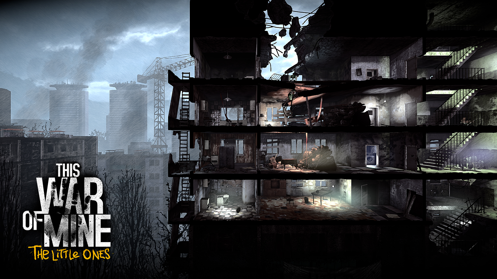

This War of Mine
This War of Mine — кроссплатформенная компьютерная игра в жанре сайдскроллерного
симулятора выживания, разработанная польской студией 11 bit studios. Персонажи игры — мирные
граждане, пытающиеся выжить в городе, охваченном гражданской войной

При разработке игры разработчики ставили своей целью показать реальную картину и
продемонстрировать, что война — это на самом деле ад.
Игровой процесс
В This War of Mine игрок управляет группой гражданских лиц в осаждённом городе.
Главной целью
игры
является пережить войну. Игровой процесс разделён на две основные фазы — дневную и ночную. Днём
игрок занимается обустройством своего убежища, производством необходимых средств, в том числе —
инструментов и оружия из имеющихся материалов, и взаимодействует со второстепенными персонажами
—
соседями, которые время от времени обращаются за помощью или же предлагают свою помощь. С
наступлением ночи игрок занимается поиском добычи, отправляя одного из своих персонажей на
вылазку в
ближайшие от убежища локации. Основные проблемы, с которыми сталкивается игрок: нехватка
провизии,
дефицит медикаментов, а также холод и вооружённые мародёры. Действие игры может происходить как
летом, так и зимой. В холодное время года менее значимой становится проблема добычи воды — можно
набирать на улице снег и растапливать его, но становится актуальной проблема холода — чтобы
персонажи не заболевали, необходимо постоянно отапливать убежище, тратя при этом дрова. Игроку
придётся принимать сложные моральные решения, от которых зависит эмоциональное состояние
персонажей
и их дальнейшая судьба, например — приказать персонажу обворовать или даже ограбить и убить
мирного
жителя, чтобы спасти от голодной смерти других членов группы.
События игры генерируются случайно — в разных прохождениях всё может сильно
отличаться.
Например,
если в первом прохождении один персонаж обращался к группе игрока за помощью, то во втором он
может
быть настроен к ней агрессивно и не пускать в свой дом. Длительность блокады города составляет
от
20-ти до 80-ти дней.
Персонажи
В начале игры игроку выдаётся под управление один персонаж или группа от двух до четырёх
человек. Всего на выбор даётся 12 персонажей, среди которых есть и мужчины, и женщины. Через
случайное количество дней к группе могут присоединяться новые персонажи, даже если группа
состоит из четырёх человек или больше. Персонажи испытывают голод, усталость, при низкой
температуре могут заболеть, при ранениях — истечь кровью, а при плохом моральном состоянии могут
уйти из убежища (забрав с собой часть припасов группы) или совершить самоубийство. Дополнение
This War of Mine: The Little Ones даёт доступ к новым дополнительным персонажам, среди которых
есть дети и взрослые.
Все персонажи основаны на реальных людях, на разработчиках, членах их
семей и друзьях.
Разработка
Разработчики вдохновлялись истинными событиями, бедными условиями, повседневной жизнью и
зверствами, которые пережили обычные люди во время осады Сараева, самой длительной осады города
в современной истории. Одним из этих людей был Эмир Церимович — один из разработчиков игры,
когда ему было 9 лет. В ноябре 2014 года стали доступны для скачивания пиратские копии игры, в
ответ разработчики из 11 bit studios опубликовали письмо, в котором с пониманием отнеслись к
людям, скачавшим пиратские копии, и разместили в комментариях к письму десять серийных ключей
для активации игры в игровом сервисе Steam.
29 января 2016 года на консолях PS4 и Xbox One вышло существенно дополненное и
доработанное издание игры This War of Mine: The Little Ones. При поддержке издательства Deep
Silver. Как говорят разработчики, в игру добавлен последний «недостающий элемент» — дети.
Один из главных разработчиков — Павел Менчовски — разрешил, чтобы его сын и дочь участвовали в
разработке игры, поскольку не каждый родитель даст разрешение на участие в такой игре, где его
ребёнок может погибнуть, а он хотел сделать игру как можно более реалистичной. Это
дополнение добавляет новые локации, крафт новых предметов, а также обучение крафту детей и
другие новые ситуации в игровой процесс.
Продажи
По заявлениям разработчиков, разработка игры окупилась на второй день после её выхода. Игру
приобрели в 92 странах мира. Около 33 % покупок пришлось на США, а среди европейских стран игра
вызвала наибольший спрос в России, Германии и Великобритании. 3 апреля 2019 года создатели
сообщили в Steam, что им удалось реализовать 4,5 миллиона копий.